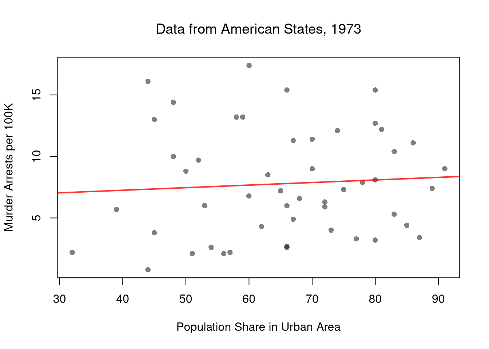
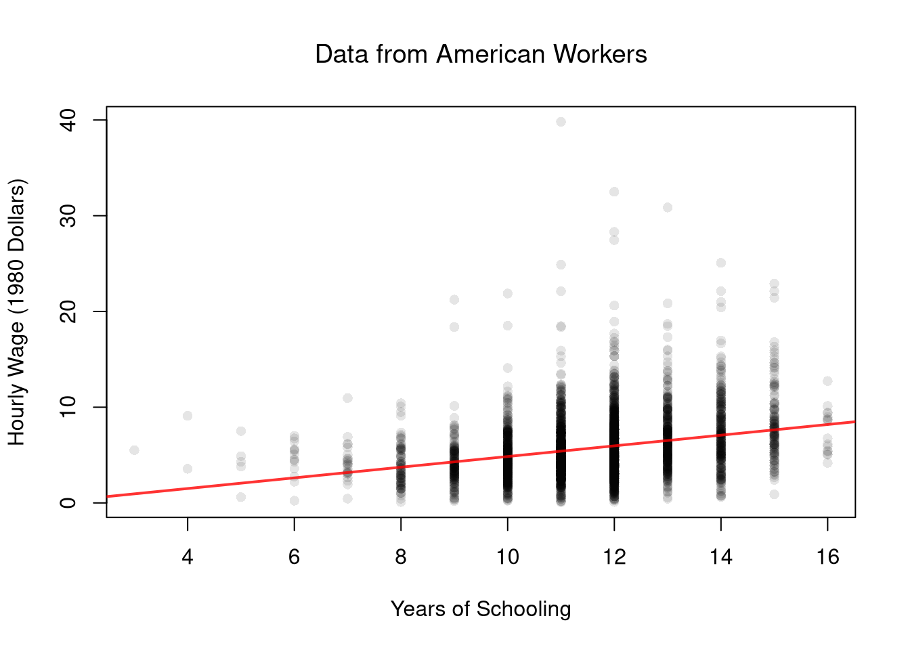
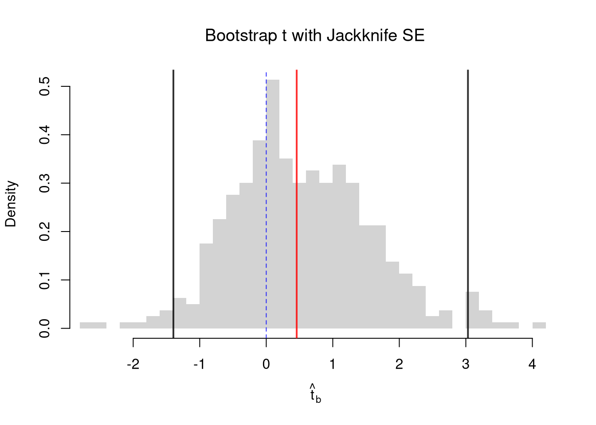
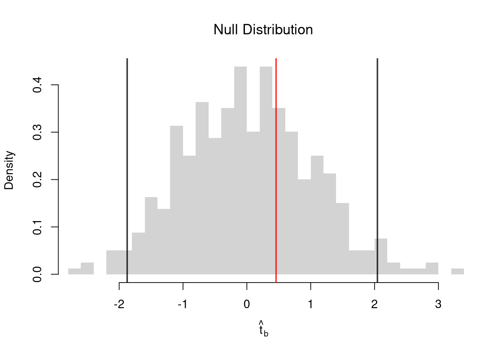
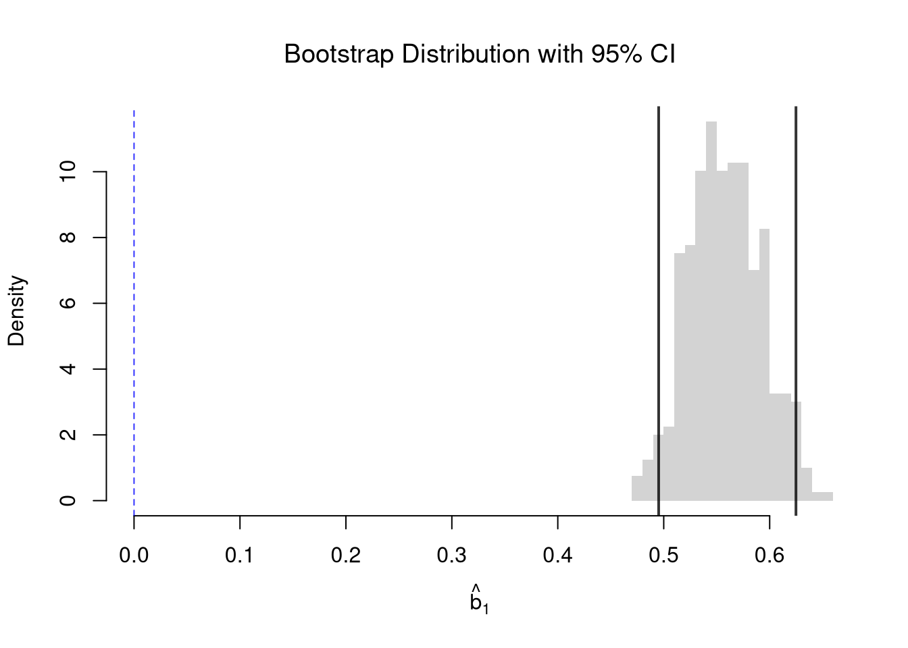
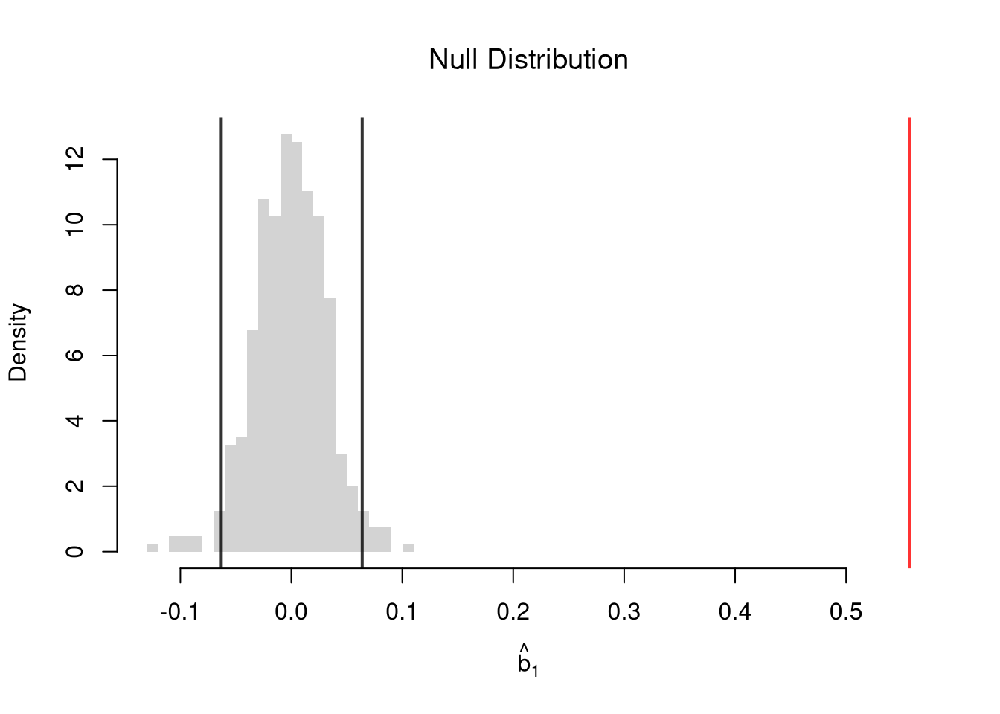
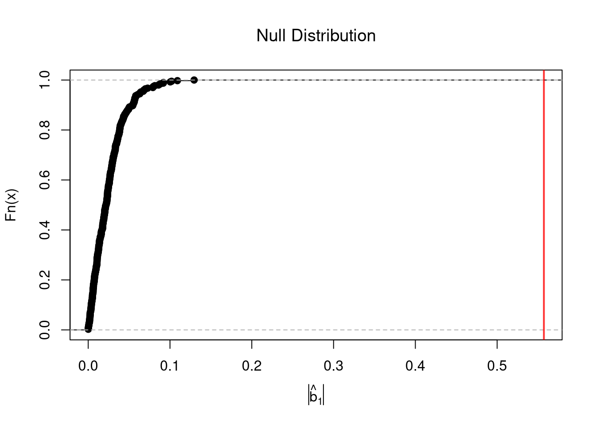
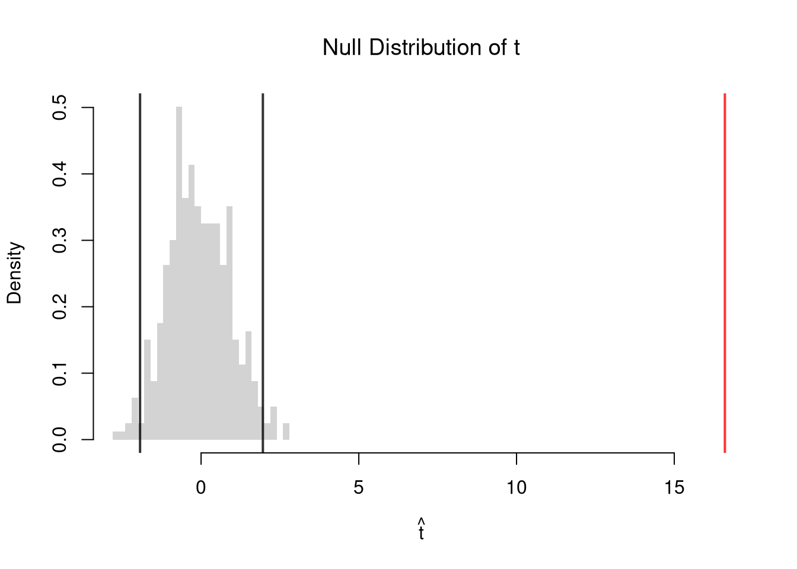
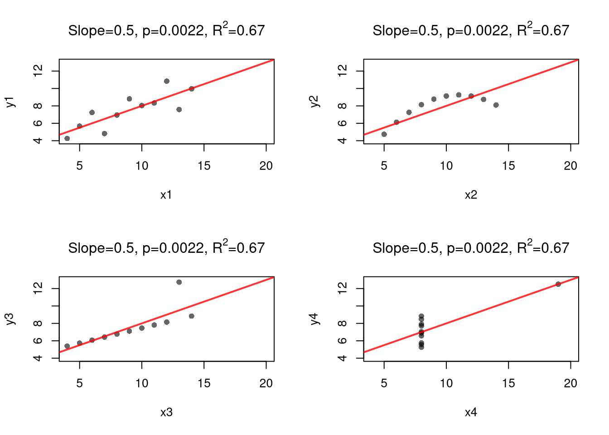

15 Simple Regression
Suppose we have some bivariate data: \(\hat{x}_{i}, \hat{y}_{i}\). In the previous chapter, we summarized the strength of association between two variables using correlation. Correlation tells us how strongly \(\hat{x}\) and \(\hat{y}\) move together, but not by how much \(\hat{y}\) changes per unit change in \(\hat{x}\). Regression answers that question by fitting a line through the data.
This chapter asks two questions.
- How is a change in \(\hat{y}\) associated with a change in \(\hat{x}\)?
- Regression slope: this is a new statistic, \(\hat{b}_{1}=\hat{c}_{XY}/\hat{v}_{X}\).
- How sure are we?
- Bootstrap confidence interval and permutation test: these assess sampling variability, or the slope’s precision. Both use the same recipe as correlation and other statistics in earlier chapters.
- R-squared and cross-validation: these assess goodness of fit, or the line’s predictive accuracy. Both are new, and we call this kind of check model assessment.
We square the residuals so that positive and negative errors do not cancel, and so that big misses are penalized more than small ones.
15.1 Simple Linear Regression
This refers to fitting a linear model to bivariate data.
Model and Objective
A regression line goes through the cloud of points. To calculate it, we need some definitions first.
The residual \(\hat{e}_{i}\) is the vertical gap between observation \(i\)’s actual value of \(\hat{y}_{i}\) and the model’s prediction for that observation: \[\hat{e}_{i}=\hat{y}_{i}-(b_{0}+b_{1}\hat{x}_{i}).\] During minimization, \(\hat{e}_{i}\) depends on the trial coefficients \(b_{0}, b_{1}\); the final residuals use the fitted coefficients \(\hat{b}_{0}, \hat{b}_{1}\). For the linear model, the OLS problem is \[\begin{aligned} \min_{b_{0}, b_{1}} \sum_{i=1}^{n} \left( \hat{e}_{i} \right)^2 &= \min_{b_{0}, b_{1}} \sum_{i=1}^{n} \left( \hat{y}_{i} - [b_{0}+b_{1} \hat{x}_{i}] \right)^2. \end{aligned}\] We could find the best-fitting coefficients numerically, by trying out different combinations of \((b_{0}, b_{1})\). You can do that in this example, which can help you understand what is happening. This problem has an analytic solution, however, which means we know that the optimal OLS slope and intercept are \[\hat{b}_{1} = \frac{\hat{c}_{XY}}{\hat{v}_{X}}, \qquad \hat{b}_{0} = \hat{m}_{Y} - \hat{b}_{1} \hat{m}_{X}.\] The computer uses this math to find the coefficients quickly. For example, the code below fits a line to two cardinal variables and checks the coefficients with these formulas.
Code
## MAIN EXAMPLE
# Lab data: 3294 US workers, with hourly wages in 1980 dollars
# Pull two columns from Wages1 and rename for compact code below
data(Wages1, package='Ecdat')
xy_hat <- Wages1[, c('school', 'wage')]
colnames(xy_hat) <- c('x_hat', 'y_hat') # x_hat=years of schooling, y_hat=hourly wage
# Run a Simple Regression
reg <- lm(y_hat ~ x_hat, data=xy_hat)
coef(reg)
## (Intercept) x_hat
## -0.7225066 0.5571617
# The intercept of about -0.72 is a negative hourly wage.
# Manual verification
x_hat <- xy_hat[, 'x_hat']
y_hat <- xy_hat[, 'y_hat']
b1 <- cov( x_hat, y_hat)/var(x_hat)
b1
## [1] 0.5571617
b0 <- mean(y_hat) - b1*mean(x_hat)
b0
## [1] -0.7225066The least-squares slope \(\hat{b}_{1}\) seeks to answer “how much does the fitted value \(\hat{y}^{\mathrm{fit}}\) change per one-unit change in \(\hat{x}\)?” When the data are not known to be linearly related, the formula shows the slope is generally just the covariance divided by the variance of \(\hat{x}\). As such, \(\hat{b}_{1}\) is generally interpreted as a summary statistic for associations, just like the correlation. In fact, \(\hat{b}_{1} = \hat{r}_{XY} \cdot \hat{s}_{Y}/\hat{s}_{X}\), so the simple regression slope is a rescaled version of the Pearson correlation statistic.
Code
# Slope
coef(reg)[2]
## x_hat
## 0.5571617
# Pearson Correlation
cor(xy_hat$x_hat, xy_hat$y_hat)
## [1] 0.2824925
# Slope from correlation: R_{XY} * S_Y / S_X
cor(xy_hat$x_hat, xy_hat$y_hat) * sd(xy_hat$y_hat)/sd(xy_hat$x_hat)
## [1] 0.5571617The intercept guarantees the fitted line passes through the point of means \((\hat{m}_{X}, \hat{m}_{Y})\). To see why, add \(\hat{b}_{1}\hat{m}_{X}\) to both sides of the intercept formula to get \(\hat{m}_{Y} = \hat{b}_{0} + \hat{b}_{1}\hat{m}_{X}\). This says that the line’s height at \(\hat{m}_{X}\) is exactly \(\hat{m}_{Y}\).
Predictions
Plugging the coefficients into the line gives the fitted value for observation \(i\). A prediction uses the same line at any design point \(x\). A fitted value is thus the prediction at a sample point. \[\begin{aligned} \hat{y}^{\mathrm{pred}}(x) &= \hat{b}_{0} + \hat{b}_{1} x \\ \hat{y}_{i}^{\mathrm{fit}} &= \hat{y}^{\mathrm{pred}}(\hat{x}_{i}) = \hat{b}_{0} + \hat{b}_{1} \hat{x}_{i}. \end{aligned}\]
Fitted values are useful for in-sample diagnostics: comparing \(\hat{y}_{i}^{\mathrm{fit}}\) to \(\hat{y}_{i}\) shows where the model fits well and where it misses (these are the residuals \(\hat{e}_{i}\) we minimized). Predictions at new values are useful for out-of-sample questions like “what hourly wage would the model predict for a worker with 14 years of schooling?”. Making predictions far away from your observations is risky, with no nearby data to anchor its prediction. Also note that a model can predict well and still not tell us what would happen. For example, a store’s daily umbrella sales predict its raincoat sales well, yet a discount that raises umbrella sales need not raise raincoat sales.
Code
# Find predicted values and residuals
predict(reg)
resid(reg)
# Manual verification
y_fit <- b0+b1*x_hat
y_fit
e_hat <- y_hat - y_fit
e_hat
Simple Constant Regression
Sometimes we restrict one coefficient of the simple linear model to zero, to get an even simpler model. Setting \(b_{1}=0\) removes \(\hat{x}_{i}\) from the model, so every observation gets the same fitted value. Our simple constant model is \[ \hat{y}_{i}=b_{0}+\hat{e}_{i}, \] where the coefficient \(b_{0}\) is a single number shared by every observation, and \(\hat{y}_{i}\) is the data for observation \(i\).
The constant model is useful as a baseline: it is our best prediction of \(\hat{y}_{i}\) when we ignore \(\hat{x}_{i}\), and other regressions can be judged by how much they improve on it. For the constant model, the OLS problem is \[ \min_{b_{0}} \sum_{i=1}^{n} \left( \hat{y}_{i} - b_{0} \right)^2. \] Setting the derivative to zero shows that the least-squares constant is the sample mean: \[\begin{aligned} \hat{b}_{0} &= \frac{\sum_{i=1}^{n} \hat{y}_{i}}{n} = \hat{m}_{Y}. \end{aligned}\] So every fitted value is the same, \(\hat{y}_{i}^{\mathrm{fit}} = \hat{m}_{Y}\).
Code
# Regress on a constant only: '~ 1' means an intercept and no slope
reg_const <- lm(y_hat ~ 1, data=xy_hat)
coef(reg_const)
## (Intercept)
## 5.757585
# Same as the sample mean
mean(xy_hat[, 'y_hat'])
## [1] 5.75758515.2 Goodness of Fit
After fitting the line, the next question is how much of the variation in \(\hat{y}\) the line actually accounts for.
\(R^{2}\) always falls in \([0,1]\) and is useful as a single-number summary of how much of the variation in \(\hat{y}\) the linear model accounts for. A value of \(\hat{R}^{2}=1\) means perfect in-sample fit, and \(\hat{R}^{2}=0\) means the model does no better than predicting the mean. The simple constant regression predicts the mean for every observation, so every term of its \(\hat{\text{ESS}}\) is zero and its \(\hat{R}^{2}=0\). The first qualitative check should still be a plot of the line over the data, however, since \(R^{2}\) is only a summary. (Even a model with \(\hat{R}^{2}\) near \(1\) only describes how the mean of \(\hat{y}\) differs across values of \(\hat{x}\).)
Code
## MAIN EXAMPLE
# Manually Compute R2
e_hat <- resid(reg)
mse_hat <- mean(e_hat^2)
y_hat <- xy_hat[, 'y_hat']
v_hat <- mean((y_hat-mean(y_hat))^2)
R2 <- 1 - mse_hat/v_hat
R2
## [1] 0.07980201
# Check R2
summary(reg)$r.squared
## [1] 0.07980201
# Double Check R2
R <- cor(xy_hat[, 'y_hat'], predict(reg))
R^2
## [1] 0.07980201Cross-Validation
To measure out-of-sample fit and predictive power, we average the squared errors of predictions for held-out observations (Allen 1974; Stone 1974; Hall and Racine 2015).
\(\hat{\text{CV}}\) is useful for comparing models by how well they predict new observations, rather than the observations used to fit them. It drops one observation at a time, like the jackknife. A model that fits the noise in the sample predicts held-out observations poorly, so its \(\hat{\text{CV}}\) rises above its in-sample \(\hat{\text{MSE}}\).
The code below refits the line \(n\) times, each time without one observation, and predicts that observation’s outcome.
Code
## MAIN EXAMPLE
# Leave-one-out errors for the line
n <- nrow(xy_hat)
loo_errors <- rep(NA, n)
for(i in seq_len(n)){
xy_i <- xy_hat[-i, ] # drop worker i
reg_i <- lm(y_hat ~ x_hat, data=xy_i)
# Predict worker i from the fit without worker i
y_pred_i <- predict(reg_i, newdata=xy_hat[i, ])
loo_errors[i] <- xy_hat[i, 'y_hat'] - y_pred_i
}
# CV
cv_hat <- mean(loo_errors^2)
cv_hat
## [1] 9.843857
# The line's CV of about 9.84 is just above its MSE of about 9.83.
# It predicts held-out workers only slightly worse than those it was fit to.The out-of-sample R-squared replaces the fitted values in \(\hat{R}^{2}=1-\hat{\text{MSE}}/\hat{v}_{Y}\) with the held-out predictions \(\hat{y}^{\mathrm{pred}(-i)}(\hat{x}_{i})\). The mean squared error \(\hat{\text{MSE}}\) then becomes \(\hat{\text{CV}}\), and the variance \(\hat{v}_{Y}\) becomes its leave-one-out version \(\hat{v}_{Y}^{\text{CV}}\), which gives \[\begin{aligned} \hat{R}^{2}_{\text{CV}} &= 1 - \frac{\hat{\text{CV}}}{\hat{v}_{Y}^{\text{CV}}}, \\ \hat{v}_{Y}^{\text{CV}} &= \frac{1}{n}\sum_{i=1}^{n} \left[ \hat{y}_{i} - \hat{m}_{Y}^{(-i)} \right]^2, \end{aligned}\] where \(\hat{m}_{Y}^{(-i)}\) is the mean of \(\hat{y}\) without observation \(i\). Since \(\hat{v}_{Y}^{\text{CV}}\) is the \(\hat{\text{CV}}\) of the simple constant regression, that model has \(\hat{R}^{2}_{\text{CV}}=0\). Unlike \(\hat{R}^{2}\), \(\hat{R}^{2}_{\text{CV}}\) can be negative and is when a model predicts held-out observations worse than the mean of the other observations would. Unlike \(\hat{R}^{2}\), the out-of-sample version is not equivalent to the squared correlation between the observations and the predictions (\(\hat{y}_{i}\) and \(\hat{y}^{\mathrm{pred}(-i)}(\hat{x}_{i})\)).
The code below compares each observation with the mean of the other observations, which gives \(\hat{v}_{Y}^{\text{CV}}\) and then \(\hat{R}^{2}_{\text{CV}}\).
Code
# Leave-one-out errors for the mean
loo_errors_mean <- rep(NA, n)
for(i in seq_len(n)){
xy_i <- xy_hat[-i, ] # drop worker i
# Compare worker i with the mean of the other workers
loo_errors_mean[i] <- xy_hat[i, 'y_hat'] - mean(xy_i[, 'y_hat'])
}
# Leave-one-out version of the variance
v_cv_hat <- mean(loo_errors_mean^2)
v_cv_hat
## [1] 10.69082
# The line's CV of about 9.84 is below this value of about 10.69.
# Out-of-sample R-squared
r2_cv <- 1 - cv_hat/v_cv_hat
# Correlation of the observations and the held-out predictions, then its square
r_cv <- cor(xy_hat[, 'y_hat'], xy_hat[, 'y_hat'] - loo_errors)
r2_gen_cv <- r_cv^2
c(R2=R2, R2_CV=r2_cv, r_CV=r_cv, R2_gen_CV=r2_gen_cv)
## R2 R2_CV r_CV R2_gen_CV
## 0.07980201 0.07922352 0.28047927 0.07866862
# R2_CV is positive, about 0.079, since CV is below the leave-one-out variance.
# Out of sample, the line predicts wages better than the other workers' mean.
# With 3294 workers, dropping one barely moves the line.
# So R2_CV is close to the in-sample R2 of about 0.080.
# The squared correlation of about 0.079 is close to both.
# The correlation itself is positive, about 0.28.With many observations, dropping one barely moves the line, so \(\hat{R}^{2}_{\text{CV}}\) is close to the in-sample \(\hat{R}^{2}\).
15.3 Variability Estimates
A regression coefficient is a statistic, so it has its own sampling distribution that we want to summarize. As in Standard Errors, we summarize that spread with the standard error: the standard deviation of the statistic’s sampling distribution. There, we computed bootstrap standard errors for the mean and the median of one variable. The slope works the same way, except that we resample whole rows of the data, so each \(\hat{x}_{i}\) stays paired with its \(\hat{y}_{i}\). For the slope, the standard error describes how much \(\hat{b}_{1}\) would change if we drew another sample of \(n\) observations. We write \(\text{SE}(B_{1})\) for the theoretical standard error of the slope estimator \(B_{1}\), and \(\hat{\text{SE}}(B_{1})\) for its estimate computed from the observed sample.
The standard error is distinct from the standard deviation of \(\hat{y}\), which measures variability of observations within a single sample. From a standard error, we can build a confidence interval: a range of values consistent with our data at a chosen level. Note that values reported by your computer do not necessarily satisfy this definition. To estimate variability, we will use the data-driven methods from Resampling Intervals. (For some theoretical background, see also https://www.sagepub.com/sites/default/files/upm-binaries/21122_Chapter_21.pdf.)
Bootstrap
There are several resampling techniques. One main one is the bootstrap, which resamples with replacement for an arbitrary number of iterations. When bootstrapping a dataset with \(n\) observations, you randomly resample all \(n\) rows in your data set \(B\) times. We can then just take the percentiles of the bootstrap distribution.
Code
## MAIN EXAMPLE
# Original OLS coefficient
slope <- coef(reg)[2]
# Number of observations
n <- nrow(xy_hat)
# Bootstrap Sampling Distribution
boot_coefs <- rep(NA, 399)
for(i in seq_along(boot_coefs)){
b_id <- sample(n, replace=TRUE)
xy_boot <- xy_hat[b_id, ]
reg_b <- lm(y_hat ~ x_hat, data=xy_boot)
slope_b <- coef(reg_b)[2]
boot_coefs[i] <- slope_b
}
# Plot Bootstrap Sampling Distribution
# + Percentile CI
hist(boot_coefs, breaks=25,
main=NA, border=NA,
freq=FALSE,
xlab=expression(hat(b)[1]))
title('Bootstrap Distribution with 95% CIs', font.main=1)
boot_ci_percentile <- quantile(boot_coefs, probs=c(.025, .975))
abline(v=boot_ci_percentile, col=rgb(0, 0, 0, .8), lwd=2)
Normal Approximation with Jackknife SE
We also use the jackknife, which loops through each row of the dataset. In each iteration of the loop, we drop that observation from the dataset and reestimate the statistic of interest. We then calculate the standard deviation of the statistic across all subsamples to get jackknife standard errors and, assuming the statistic’s sampling distribution is approximately Normal, use Normal quantiles to construct a CI.1
Code
# Jackknife Sampling Distribution for OLS Coefficient
jack_coefs <- rep(NA, n)
for(i in seq_along(jack_coefs)){
xy_i <- xy_hat[-i, ]
reg_i <- lm(y_hat ~ x_hat, data=xy_i)
slope_i <- coef(reg_i)[2]
jack_coefs[i] <- slope_i
}
jack_se <- sqrt((n - 1)/n * sum((jack_coefs - mean(jack_coefs))^2))
# Plot Estimated Sampling Distribution
# Grid spans four jackknife SEs on either side of the estimate
x <- seq(slope - 4*jack_se, slope + 4*jack_se, length.out=500)
fx <- dnorm(x, mean(jack_coefs), jack_se)
plot(x, fx, type='l', bty='n', col=rgb(0, 0, 1, .8),
xlab=expression(hat(b)[1]))
title('Normal Approx. with 95% CIs', font.main=1)
# Normal Approx Confidence Interval
jack_ci_normal <- qnorm(c(.025, .975), slope, jack_se)
abline(v=jack_ci_normal, col=rgb(0, 0, 0, .8), lwd=2, lty=2)
# Bootstrap Quantiles
abline(v=boot_ci_percentile, col=rgb(0, 0, 0, .8), lwd=2)
legend('topright', lty=c(1, 2), lwd=2, col=rgb(0, 0, 0, .8), bty='n', cex=.75,
title='Confidence Interval',
legend=c('Bootstrap Percentile', 'Normal Approx.'))
In any case, a \(95\%\) confidence interval should contain the population slope in about \(95\%\) of samples. Any one sample can miss it by a fair amount.
15.4 Hypothesis Tests
We can also use resampling to test a null hypothesis, most often of “no relationship”. We are rarely interested in computing standard errors and conducting hypothesis tests for simple linear regressions in practice, but work through the ideas with two variables before moving to analyze multiple variables.
Invert a CI
One main way to conduct hypothesis tests is to examine whether a confidence interval contains a hypothesized value, as in Invert a CI. Does the slope coefficient equal \(0\)? We already have a bootstrap percentile interval for \(\hat{b}_{1}\), so we check whether it contains \(0\).
Code
# Bootstrap distribution of the slope from above, with zero added to the plot
hist(boot_coefs, breaks=25,
main=NA, border=NA, freq=FALSE,
xlab=expression(hat(b)[1]),
xlim=range(c(0, boot_coefs)))
title('Bootstrap Distribution with 95% CI', font.main=1)
abline(v=boot_ci_percentile, col=rgb(0, 0, 0, .8), lwd=2)
abline(v=0, col=rgb(0, 0, 1, .8), lty=2)
Code
# Does the 95% interval contain zero?
boot_ci_percentile
## 2.5% 97.5%
## 0.4952086 0.6248158
unname(boot_ci_percentile[1] <= 0 & boot_ci_percentile[2] >= 0)
## [1] FALSE
# The interval does not contain 0.
# So a slope of zero is not consistent with the data at the 95% level.If the interval does not contain \(0\), a slope of zero is not consistent with the data at the \(95\%\) level.
Impose the Null
We can also compute a null distribution. We focus on the simplest: simulations that each impose the null hypothesis and re-estimate the statistic of interest. Specifically, we compute the distribution of slopes on data with randomly reshuffled outcomes (imposing the null), and compare how extreme the observed slope is. We can sample with replacement (i.e., the null bootstrap) or without (permutation), just as with the correlation statistic.
Code
## MAIN EXAMPLE
# Null Distribution for Reg Coef
null_coefs <- rep(NA, 399)
for(b in seq_along(null_coefs)){
# Permuted data
xy_perm <- xy_hat
xy_perm[, 'y_hat'] <- sample( xy_perm[, 'y_hat'], replace=FALSE) #Bootstrap: replace=T
# Redo regression
reg_b <- lm(y_hat ~ x_hat, data=xy_perm)
null_coefs[b] <- coef(reg_b)[2]
}
# Null Distribution
hist(null_coefs, breaks=25,
main=NA, border=NA, freq=FALSE,
xlab=expression(hat(b)[1]),
xlim=range(null_coefs, slope))
title('Null Distribution', font.main=1)
# Middle 95% of the permuted slopes
null_ci <- quantile(null_coefs, probs=c(.025, .975))
abline(v=null_ci, col=rgb(0, 0, 0, .8), lwd=2)
# Observed value
abline(v=slope, col=rgb(1, 0, 0, .8), lwd=2)
Permutations are common when testing against “no association”. From permuted data, we can calculate a \(p\)-value: the probability you would see something at least as extreme as your statistic under the null (assuming your null hypothesis was true, see \(p\)-values). We calculate the \(p\)-value directly from the null distribution. Smaller \(p\)-values suggest more evidence against the null.
Code
# Two Sided Test for P(|b1| >= |observed b1| | Null of b1=0)
F_hat <- ecdf(abs(null_coefs))
p_slope <- mean(abs(null_coefs) >= abs(slope))
p_slope
## [1] 0
plot(F_hat, xlim=range(abs(null_coefs), abs(slope)),
xlab=expression( abs(hat(b)[1]) ),
main=NA)
title('Null Distribution', font.main=1)
abline(v=abs(slope), col=rgb(1, 0, 0, .8), lwd=2)
Caveats
We could also use hard decision rules, such as “\(p < 0.05\) is a statistically significant finding”. However, just like confidence intervals, those hard decision rules can be sensitive to somewhat arbitrary choices (Why a bootstrap percentile interval instead of a jackknife Normal one? Why test at the \(95\%\) level rather than \(90\%\)?)
“No association” is the most common null hypothesis in practice, but we can also use bootstrapping to test against other specific hypothesized values of \(\beta_{1}\), the population slope. The simplest way is to check whether \(\beta_{1}\) lies inside the bootstrap interval for \(\hat{b}_{1}\). To impose the null instead, you recenter the bootstrap distribution of \(\hat{b}_{1}\) around the hypothetical value, as we did for the mean in Impose the Null.
Although two-sided hypothesis tests are most common, you can also test one-sided hypotheses.
Standardized Slopes
Software typically reports a \(t\)-value for each coefficient, which divides the coefficient by its standard error: \(\hat{t} = \frac{\hat{b}_{1}}{\hat{\text{SE}}(B_{1})}\), where \(\hat{\text{SE}}(B_{1})\) is the estimated standard error of the coefficient. For reasons we won’t go into in this book, \(\hat{t}\) is often used instead of \(\hat{b}_{1}\) as the test statistic. As a final example, we redo the permutation test with \(\hat{t}\), using the jackknife standard error from above. Each permutation recomputes both the slope and its jackknife standard error.
Code
# Create t-stat with jackknife SE
t_hat <- slope/jack_se
# Null Distribution for t-stat
# This takes a minute or two: each permutation recomputes n jackknife slopes
null_t <- rep(NA, 399)
for(b in seq_along(null_t)){
# Permuted data
xy_perm <- xy_hat
xy_perm[, 'y_hat'] <- sample( xy_perm[, 'y_hat'], replace=FALSE)
# Redo regression
reg_b <- lm(y_hat ~ x_hat, data=xy_perm)
slope_b <- coef(reg_b)[2]
# Redo Jackknife SEs
# Each slope is cov/var, which matches lm() and is much faster inside nested loops
x_perm <- xy_perm[, 'x_hat']
y_perm <- xy_perm[, 'y_hat']
jack_coefs_b <- rep(NA, nrow(xy_perm))
for(i in seq_along(jack_coefs_b)){
jack_coefs_b[i] <- cov(x_perm[-i], y_perm[-i])/var(x_perm[-i])
}
n_b <- length(jack_coefs_b)
jack_se_b <- sqrt((n_b - 1)/n_b * sum((jack_coefs_b - mean(jack_coefs_b))^2))
# Redo t with Jackknife SE
null_t[b] <- slope_b/jack_se_b
}
# Null Distribution
hist(null_t, breaks=25,
main=NA, border=NA, freq=FALSE,
xlab=expression(hat(t)),
xlim=range(null_t, t_hat))
title('Null Distribution of t', font.main=1)
abline(v=quantile(null_t, probs=c(.025, .975)), col=rgb(0, 0, 0, .8), lwd=2)
abline(v=t_hat, col=rgb(1, 0, 0, .8), lwd=2)
Code
# Two Sided Test for P(|t| >= |observed t| | Null of t=0), next to the slope version
p_t <- mean(abs(null_t) >= abs(t_hat))
c(slope=p_slope, t=p_t)
## slope t
## 0 0
# Both p-values are essentially zero.
# So both tests reject the null of no relationship between schooling and wages.Precision and Fit
A slope can be estimated precisely, with a narrow interval and a small \(p\)-value. But \(\hat{R}^{2}\) can still be low, so the line leaves most of the variation in \(\hat{y}\) unexplained. Real data are often noisy, so a precise slope with a low \(\hat{R}^{2}\) is common. Outcomes differ across observations for many reasons other than \(\hat{x}\). The two results do not conflict, because they answer different questions.
- Estimated association, given the model: the slope, its standard error, and the \(p\)-value take the line as given and ask how well we have estimated it.
- How much to trust the model: goodness of fit asks how well the model accounts for the data. Unlike the standard error, it does not keep shrinking as \(n\) grows, and it is useful as a comparison between models.
More observations pin down the line more precisely, but they do not move the outcomes closer to the line. With enough observations, even a weak association has a small \(p\)-value, so a small \(p\)-value does not mean a good fit. A low \(\hat{R}^{2}\) is also not a reason to dismiss a precise slope.
To compare models, we can ask which one predicts held-out observations better. When the line has a lower \(\hat{\text{CV}}\) than the simple constant regression, we would choose the line to predict the outcome, even if it leaves most of the variation unexplained. When the constant model has the lower \(\hat{\text{CV}}\), we would choose it over the line. The sign of \(\hat{R}^{2}_{\text{CV}}\) reports the same comparison: it is positive when the line has the lower \(\hat{\text{CV}}\) and negative when the constant model does. The code below collects these results.
Code
# Wage data: the slope's 95% bootstrap interval and p-value, then R-squared
boot_ci_percentile
## 2.5% 97.5%
## 0.4952086 0.6248158
p_slope
## [1] 0
# The slope is estimated precisely.
# Its 95% bootstrap interval runs from about 0.50 to 0.62.
# Its p-value is essentially zero.
R2
## [1] 0.07980201
# R-squared is only about 0.08.
# So the line leaves most of the variation in wages unexplained.
# Wages differ across workers for many reasons other than schooling.
# Wage data: CV of the line and of the constant model, then R2_CV
c(line=cv_hat, constant=v_cv_hat, R2_CV=r2_cv)
## line constant R2_CV
## 9.84385670 10.69082123 0.07922352
# The line has the lower CV, about 9.84 against 10.69, and R2_CV is positive.
# So we would choose the line to predict wages.
# That holds even though it leaves most of the variation unexplained.15.5 Regression and Causation
The same caveats about “correlation is not causation” from Association is not Causation extend to regression. You may be tempted to use the term “the effect”, but that interpretation of a regression coefficient assumes the linear model is true. If you fit a line to a non-linear relationship, then you will still get back a coefficient even though there is no singular the effect: the true relationship is non-linear! Also consider a classic example, Anscombe’s Quartet (Anscombe 1973), which shows four very different datasets that give the same linear regression coefficient. Notice that you understand the problem because we used scatterplots to visualize the data.2
Code
# Anscombe's Quartet
par(mfrow=c(2, 2))
for(i in 1:4){
x_hat <- anscombe[, paste0('x', i)]
y_hat <- anscombe[, paste0('y', i)]
plot(x_hat, y_hat, ylim=c(4, 13), xlim=c(4, 20),
pch=16, col=grey(0, .6), main=NA,
xlab=paste0('x', i), ylab=paste0('y', i))
reg <- lm(y_hat ~ x_hat)
# Slope, its p-value, and R-squared for the panel title
b <- round(coef(reg)[2], 2)
p <- round(summary(reg)$coefficients[2, 4], 4)
r2 <- round(summary(reg)$r.squared, 2)
abline(reg, col=rgb(1, 0, 0, .8), lwd=2)
title(bquote(paste('Slope=', .(b), ', p=', .(p), ', ', R^2, '=', .(r2))), font.main=1)
}
Code
## For an even better example, see `Datasaurus Dozen'
#browseURL(
#'https://bookdown.org/paul/applied-data-visualization/
#why-look-the-datasaurus-dozen.html')It is true that linear regression “is the best linear predictor of the nonlinear regression function if the mean-squared error is used as the loss function” (Cameron and Trivedi 2005, 92). But this is not a carte-blanche justification for OLS, as the best of the bad predictors is still a bad predictor. For many economic applications, it is more helpful to think and speak of “dose response curves” instead of “the effect”.
While adding interaction terms or squared terms allows one to incorporate heterogeneity and non-linearity, they change several features of the model (most of which are not intended). Often, there are nonsensical predicted values. For example, if most of your age data are between \([23,65]\), a quadratic term can imply silly things for people aged \(10\) or \(90\).
Nonetheless, linear regression provides an important piece of quantitative information that is understood by many. All models are an approximation, and sometimes only unimportant nuances are missing from a vanilla linear model. Other times, that model can be seriously misleading. (This is especially true if you are making policy recommendations based on a universal “the effect”.) As an exploratory tool, linear regression is a good guess but one whose point estimates should not be taken too seriously (in which case, the standard errors are also much less important). Before trying to find a regression specification that makes sense for the entire dataset, explore local relationships.
15.6 Exercises
Comment the script you wrote for this chapter, then restart R and check that it runs from a clean session, then check the script with AI as explained in Working with AI. Write three sentences from memory on the main statistical idea of this chapter, and ask the assistant what is wrong, vague, or missing. Finish with your own questions about whatever you found hardest.
Explain in words what the \(R^2\) statistic measures. A researcher runs a regression and finds \(\hat{R}^2 = 0.95\). Does this mean the model is correctly specified or that \(X_{i}\) causes \(Y_{i}\)? Why or why not? In your answer, explain why confounding and selection bias need not lower \(\hat{R}^{2}\).
Suppose you have \(n=4\) observations: \(\{(1, 3),\ (2, 5),\ (3, 6),\ (4, 10)\}\). Compute \(\hat{b}_{0}\) and \(\hat{b}_{1}\) by hand using \(\hat{b}_{1} = \hat{c}_{XY}/\hat{v}_{X}\) and \(\hat{b}_{0} = \hat{m}_{Y} - \hat{b}_{1} \hat{m}_{X}\). Then compute the fitted values \(\hat{y}_{i}^{\mathrm{fit}}\), the residuals \(\hat{e}_{i}\), and \(\hat{R}^2\).
Using the
mtcarsdataset, regressmpgonwtwithlm(). Report \(\hat{b}_{0}\), \(\hat{b}_{1}\), and \(\hat{R}^2\). Then write a bootstrap with \(B = 999\) iterations to construct a \(95\%\) percentile confidence interval for \(\beta_{1}\) and check whether it contains zero.
Further Reading
- https://www.econometrics-with-r.org/4-lrwor.html – OLS estimation, fitted values, and residuals explained step by step with R.
- https://learningstatisticswithr.com/book/regression.html – accessible introduction to simple linear regression including interpretation of coefficients and \(R^2\).
- https://www.khanacademy.org/math/statistics-probability/describing-relationships-quantitative-data/regression-library/v/introduction-to-residuals-and-least-squares-regression – video walkthrough of least-squares fitting and residual plots.
Recall
The OLS line for bivariate data has slope \(\hat{b}_{1}=\hat{c}_{XY}/\hat{v}_{X}\) and intercept \(\hat{b}_{0}=\hat{m}_{Y}-\hat{b}_{1}\hat{m}_{X}\). We measured its goodness of fit with \(\hat{R}^{2}\) in sample and with leave-one-out cross-validation out of sample. For the wage data, the line predicted held-out workers better than the constant model, and its \(\hat{R}^{2}_{\text{CV}}\) of about \(0.079\) was close to its \(\hat{R}^{2}\). For the murder data, the line predicted held-out states worse than the constant model, and its \(\hat{R}^{2}_{\text{CV}}\) was about \(-0.04\). We built confidence intervals and \(p\)-values by resampling the data with the bootstrap, the jackknife, and permutations. For the wage data, the slope’s \(p\)-value was essentially zero while \(\hat{R}^{2}\) was only about \(0.08\), since precision and fit answer different questions. Anscombe’s Quartet gave four very different datasets the same linear regression coefficients, and only the scatterplots showed the difference. The three-observation worked example \(\{(1,2),(2,2.5),(3,4)\}\) traced through every step by hand and produced slope \(\hat{b}_{1}=1\), intercept \(\hat{b}_{0}=5/6\), \(\hat{\text{TSS}}=13/6\), \(\hat{\text{RSS}}=1/6\), and \(\hat{R}^{2}=12/13\approx 0.92\).
Allen, David M. 1974. “The Relationship Between Variable Selection and Data Augmentation and a Method for Prediction.” Technometrics 16 (1): 125–27. https://doi.org/10.1080/00401706.1974.10489157.
Anscombe, F. J. 1973. “Graphs in Statistical Analysis.” The American Statistician 27 (1): 17–21. https://doi.org/10.1080/00031305.1973.10478966.
Cameron, A. C., and P. K. Trivedi. 2005. Microeconometrics: Methods and Applications. Cambridge University Press. https://books.google.de/books?id=Zf0gCwxC9ocC.
Hall, Peter G., and Jeffrey S. Racine. 2015. “Infinite Order Cross-Validated Local Polynomial Regression.” Journal of Econometrics 185 (2): 510–25. https://doi.org/10.1016/j.jeconom.2014.06.003.
Stone, M. 1974. “Cross-Validatory Choice and Assessment of Statistical Predictions.” Journal of the Royal Statistical Society: Series B (Methodological) 36 (2): 111–33. https://doi.org/10.1111/j.2517-6161.1974.tb00994.x.
Recall that jackknife standard errors need to be rescaled because each jackknife resample is too similar to the next. For this reason, we also do not simply take the percentiles of the jackknife distribution. We can also calculate the standard deviation of the statistic across all bootstrap samples instead.↩︎
The same principle holds when comparing two groups: http://www.stat.columbia.edu/~gelman/research/published/causal_quartet_second_revision.pdf↩︎